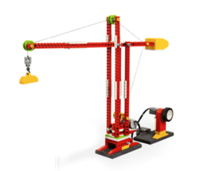
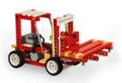
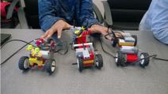
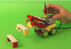
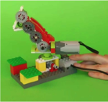
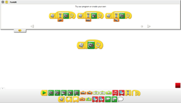
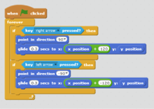

Extend Yourself
Build More Machines
Now that you have built one great construction machine, how about building another one or invent your own?
  
Go to the RoboCAMP channel on YouTube or search online to find construction machines, vehicles, and even robots.
 
Program Challenge
Try programming your machines so they respond to sensors and do work automatically. Maybe you can program your machine to lift an object when it is placed in front of it. You can program using the Lego WeDo software or try using Scratch.
 
Forklift Math Mastery
Can you solve these math challenges?
- An average forklift weight 9,000 lbs. Weigh your forklift. Assuming it is a scale model of a real forklift – what is the scale of your model? (Example: A model that is 90 lbs. is 1:100 or 1/100)
- Look up the average length, width, and height of a 9,000 lb. forklift. Using your calculated scale, can you figure out the length, width and height of your forklift? Measure your forklift after calculating to see if you were right. (You may calculate correctly and yet the numbers may not match up. Why do you think that could be the case?)
- What cool math problems could you come up with to stump your friends?
Tower Crane Math Mastery
Can you solve these math challenges?
- The maximum height of a freestanding tower crane 265 ft. Measure your tower crane. Assuming it is a scale model of a real one – what is the scale of your model? (Example: A model that is 26.5 ft is 1:10 or 1/10)
- Look up the maximum weight a 265 ft. tower crane can lift. Using your calculated scale, can you figure out the maximum weight your crane can lift? Test your crane after calculating to see if you were right. (You may calculate correctly and yet the numbers may not match up. Why do you think that could be the case?)
- What cool math problems could you come up with to stump your friends?